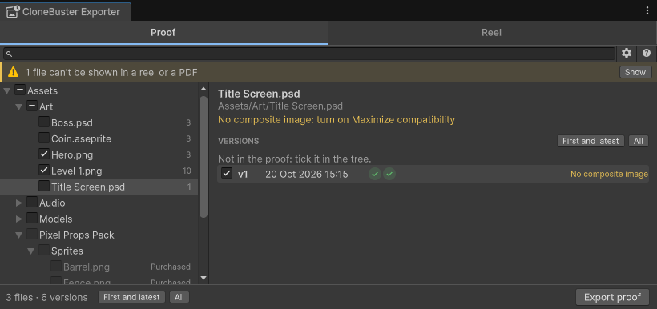

Troubleshooting
The banners, Console messages and export results CloneBuster shows, and what to do about them.
Console messages
| Message | Cause | What to do |
|---|---|---|
was saved without its image | A PSD, Blender, Krita or Procreate file saved without the image CloneBuster reads. | Apply the fix the message names, then save the file again. |
could not be rendered for its preview | Unity imported a model CloneBuster couldn't render. | Check the model imports without errors. The version is recorded without a preview. |
can't be watched | A recorded folder can't be watched, for example on some network drives. | Nothing: the scan every few minutes records its files instead. |
lists N versions in manifest.txt and M in paths.txt | A batch folder was damaged. | Restore the folder from version control. |
has Windows line endings | Git converted the batch's files on checkout, so its proofs no longer match them. The batch is left out. | Commit CloneBuster Vault/.gitattributes, delete the batch folder and check it out again from git. The committed copy is unchanged. |
exists but could not be read | ProjectSettings/CloneBusterSettings.asset or a batch's timestamp file is damaged. | Restore it from version control. |
could not be read, so it's left out | A batch folder was damaged. | Restore the folder from version control. |
of batch ... could not be read | A timestamp file in a batch folder is damaged. | Restore the folder from version control. |
could not be upgraded | CloneBuster couldn't complete a pending Bitcoin proof. | Nothing if the network is down: CloneBuster tries again every half hour. |
wasn't found in the package's Documentation folder | The manual's folder was deleted. | Reimport the package. |
Export results
| Result | Meaning |
|---|---|
Nothing exported: no ticked version has its RFC 3161 timestamp yet | Every ticked version was recorded offline. Export again once the network returns. |
The Bitcoin proof for N versions isn't confirmed yet | The export leaves it out. Export again in a few hours to add it. Refer to Export again once Bitcoin confirms. |
N versions left out: their RFC 3161 timestamps aren't in yet | The versions were recorded offline. Export again once the network returns. |
N versions' originals weren't found on disk or in git history | The message names the files and versions. Each file has changed since, and git doesn't have those versions: git isn't installed, the file isn't tracked, or the versions are older than its last 300 commits. Their previews and proofs still date them. |
Fix a file saved without its image
Some tools save files without the flattened image CloneBuster reads. When that happens, the version is still hashed and timestamped, but it has no preview, so it can't appear in a reel or as an image in a PDF. The Exporter shows a banner, and the Console window shows the fix.

| File | Fix |
|---|---|
| A PSD file without a composite image | In Photoshop, go to Preferences > File Handling, set Maximize PSD and PSB File Compatibility to Always, then save the file again. |
A .blend file without a thumbnail | In Blender, go to Preferences > Save & Load, enable Save Preview Images, then save the file again. |
A compressed .blend file | In Blender's Save As window, disable Compress, then save the file again. |
A .procreate file without a thumbnail | Save the file again from Procreate. |
| A file shown as Unreadable, such as a 16-bit, CMYK or PSB file | Save it as an 8-bit RGB or grayscale PSD, or again from its own tool. |
Fix the setting as soon as you see the banner: a version that was saved without its image can't get a preview later.